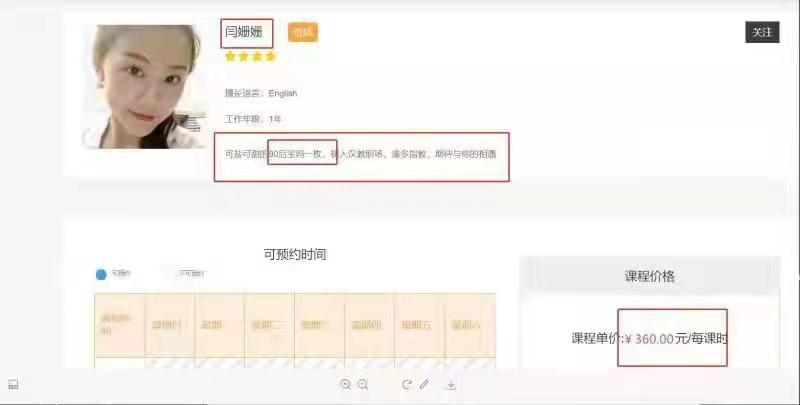
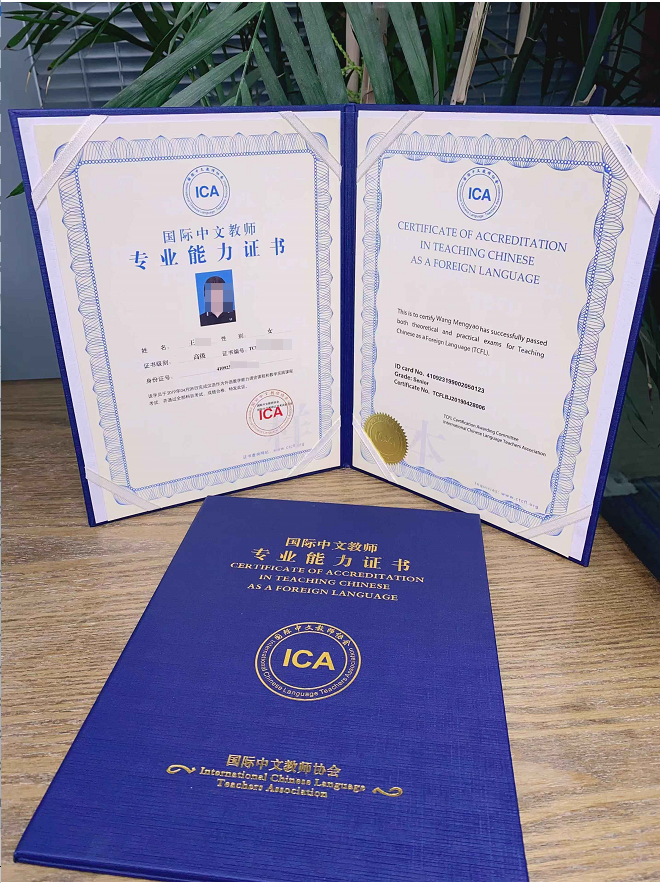
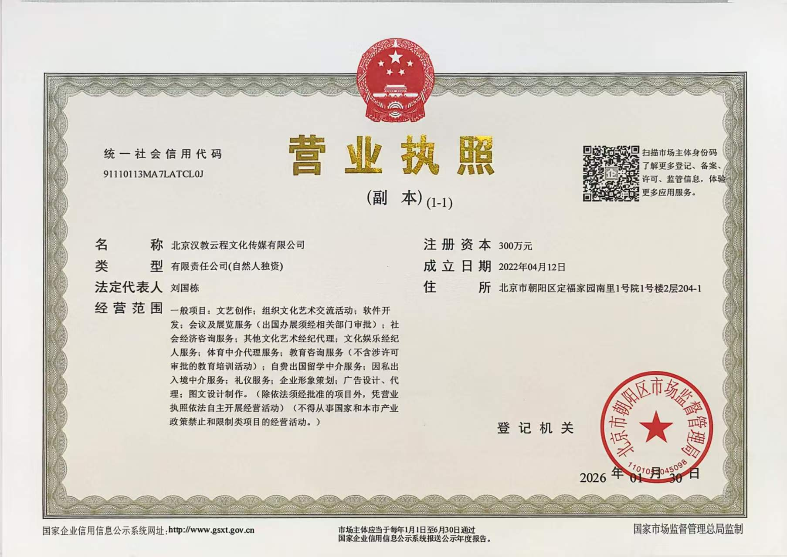

形态 01线下课堂与智慧课堂设计
国际中文教师 · 认证培训与岗位对接
海外就业环境在变，
先把这条路看清楚
这一页按四段讲清楚：海外就业环境正在发生什么变化 → 国际中文教师到底做什么、行业前景如何 → 为什么值得考虑 → 我们是谁、能提供什么、不能承诺什么。 机构数据一律标注「机构资料」，参考区间一律标注「以实际岗位为准」。
- 成立年份
- 2021 机构资料
- 累计培养人才
- 10000+ 机构资料
- 合作院校 / 机构
- 300+ 机构资料
- 岗位覆盖国家和地区
- 85 机构资料
示意图：节点为区域代表位置，非地理精确制图。完整可交互视图见模块一《岗位形态地图（辅助视觉）》。
模块一
海外就业环境与国际中文教师
先看清环境与门槛，再决定要不要把讲台放到海外。本节按「环境 → 职业 → 前景」的顺序展开， 地图与地区面板放在最后，只作为岗位形态的辅助视觉。
1. 先说环境：现在的难，主要难在信息与合同
过去两年，海外中文教师求职的预期发生了两件事。一是「海投就能出结果」的路径在多数地区已经走不通： 招聘方更看重可验证的教学资历、试讲录像与合规身份，而不是一份证书本身。二是同类岗位在不同国家、 不同机构的用工方式差别很大，真正的分歧往往不发生在面试环节，而是发生在合同条款里。
我们不去下「环境好 / 环境差」的判断——那属于没有来源的评价。这里只列出三件你可以自己核实的事：
- 招聘信息分散 海外中文教师岗位分散在国际学校人力渠道、当地学校招聘页、线上平台与区域机构，没有统一的公开岗位库。 同一个岗位常在不同渠道出现要求不同的版本，逐条比对本身就要花时间。
- 门槛主要是「身份 + 资质 + 语言」 多数线下海外岗位除教学能力外，还有工作许可 / 签证、当地教师资格或课程体系（如 IB）经验等前置条件。 这部分往往比证书更卡人，也不是培训机构能代为解决的。
- 分歧集中在合同条款 课时量与结算周期、试用期是否计费、单方调价、税费与汇率由谁承担、续约条件—— 这些条款的差异，远大于岗位名称之间的差异。
资料边界提示 本节不含「海外就业环境不好」这类判断句，也不含任何就业率、成功率、岗位数量或收入承诺。 第三方招聘渠道与平台的合作授权、公开列名许可尚未确认，因此本页不展示任何具体招聘平台或机构名称。
授课案例视频
资料中的课堂记录，用于展示授课形态。
案例入口
先看三条真实反馈，再看完整案例库
以下内容摘自 PDF 第4.3「真实就业」截图：娄好反馈试讲后家长续课，韩青反馈面试通过， 黎检桐反馈“面试通过啦”。这些是机构资料中的聊天记录摘要，未做第三方核验，不代表就业或收入承诺。
完整的审核、签协议、课时费沟通，以及 Nancy L.、Nancy T.、婷婷洪的教师主页数据，见模块三案例库：
- 反馈结果：续课、面试通过、审核通过或签协议
- 教师主页：经验、课量、评分、评论与截图价格
- 资料边界：截图可读信息，不替截图外推就业率
2. 国际中文教师是什么
国际中文教师，是面向母语非中文的学员教授汉语与中国文化的教师。它不等同于「会说中文就能做」： 这是一份需要教学法、课堂组织能力与跨文化沟通能力的工作。
- 工作内容
- 汉语语音、词汇、语法与汉字教学；听说读写分项训练；HSK 等考试的专项辅导；中国文化与跨文化交际内容的设计与讲授； 教案、课件与练习的设计与迭代。核心不是「讲了多少」，而是学员能否在目标场景里用中文完成任务。
- 服务对象
- 母语非中文的成人学习者（职场、留学、兴趣）、少儿学习者，以及企业与机构学员 （海外中资企业本土化培训、国际学校中文项目、跨境文化课程）。
- 评价标准
- 学员的沟通与考试结果、课堂参与度、课程续报，而不是教师的资历标签。 因此试讲录像、课堂设计与学员反馈，通常比头衔更能影响岗位方的判断。
三种岗位形态：线上 / 线下 / 海外
-
线上远程授课
通过教学平台按课时授课，一对一小班为主，时间相对灵活。课时单价、抽成与结算规则由平台规定，收入随课时量波动。
-
国内线下授课
在语言机构、国际学校或企业现场授课，有固定班表与场地要求，通常需要坐班并配合周末与假期排课。
-
海外线下 / 驻外岗位
以工作许可或当地资质为基础的长期岗位，前置条件最多（身份、语言、课程体系经验），准备周期也最长。
三种形态并不互斥。不少人的实际路径是：先做线上积累课时与试讲录像，再带着这段经历去申请线下或海外岗位。 机构资料

形态 02线上按课时远程授课
形态 03海外驻外与中文文化交流
3. 行业前景：中文在国际教育体系里的位置
下面是机构资料中关于「中文国际化」与教师需求的部分内容。这些数字来自机构提供的资料转述， 本页没有取得独立的公开来源原件，因此逐条标注「待核验」。 引用前请自行核对原始出处与统计时间——在核实之前，这些数字既不能当作机构成绩，也不能当作就业或投资依据。
-
中文作为联合国官方语言，已进入全球 190 余国的教育体系，其中 85 国将其纳入国民教育系统。
-
海外学习中文人数 3 千万，累计使用人数 2 亿。
-
技术赋能方向：某「中文联盟」平台上线 407 门数字化课程，覆盖 212 个地区。
-
本土化发展方向：培养海外中文本土教师与汉学家，资料举例为「喀麦隆已培育 300 名本土师资」。
-
政策与模式方向：教育部通过「一带一路」推动中外教育合作，与 54 国签署学历互认协议，并建立「中文 + 职业技能」模式。
-
教师需求方向（岗位类型描述）：海外本土中文师资培养、国际学校中文项目支持、跨境文化课程开发、企业本土化汉语培训。
边界提示 上表第 1–5 条均为机构资料转述的行业宏观数据，无公开来源与统计时间，处于「待核验」状态。 在核实来源前，本页不把这些数字写成机构成绩，也不据此推算任何收入或就业概率。
岗位形态 · 辅助视觉
岗位形态地图 · 你的讲台可能在哪个时区
下面的地图与地区面板是模块一的辅助视觉，用来展示岗位形态与去向分布， 不改变上文「海外就业环境 → 国际中文教师 → 行业前景」的叙述顺序。 点击地图节点或右侧列表中的地区，查看该区域的岗位类型、工作方式与参考区间。
- 全球 300+ 合作院校 / 教育机构 机构资料
- 100+ 大型线上教学平台 机构资料
- 200+ 区域化教学机构 机构资料
- 岗位对接覆盖 85 个国家和地区 机构资料
口径说明：85 个国家及地区指平台与岗位的可对接范围，不等同于学员已入职地区； 「300+ 合作院校 / 机构」与「200+ 区域化教学机构」存在口径重叠的可能，机构未提供去重说明。
关于参考区间，我们的态度
行业内流传的「年薪 40–60 万」属于个别地区、个别机构的宣传口径，不是普遍水平，也不是我们的承诺。 本页所有参考区间都来自机构资料整理，标注为参考范围，只在模块一地区面板与模块二「待遇与成长空间」两处出现， 均带「以实际岗位为准」，且不进入首屏。 判断一个岗位值不值得去，应当看合同里的课时量、结算周期、税费承担与续约条件——这些我们会带你逐条核对。
- 岗位类型举例：外籍学员汉语培训、跨境文化课程开发、IB 学校中文项目支持、少儿 / 商务 / HSK 专项教学。
- 工作方式举例：线下全职、线上线下混合、线上远程按课时结算。
- 合作关系：第三方教学平台的合作授权与公开列名许可尚未确认，因此本页不展示任何平台品牌名称与标识，统一表述为「国际在线教学平台」。
模块二
为什么选择成为国际中文教师
这是被问得最多的问题。下面四条是我们能给出依据的部分。每一条都写明了适用条件与不确定的地方—— 不能验证的地方，我们直接写「待核验」，或者不写。
报考门槛低：门槛不等于没有门槛
与多数需要长期学历教育或执业考试的职业相比，国际中文教师的报考条件更集中在 学历、语言水平与培训学时三个维度上，不要求全日制相关专业出身，这是它相对友好的地方。 但需要说清楚：不同证书体系对这三项的要求并不相同。
三种证书体系不是同一个「官方证书」
宣传材料里常把几种证书并列成「官方认证」。实际上它们的发证主体、适用范围与考试规则都不同， 报考前请先确认你要的是哪一种。下表仅作体系区分的说明，不构成报考建议。
| 对比项 | 国家汉办 / 中外语言交流合作中心体系 | IPA 体系 | ICA 相关证书 |
|---|---|---|---|
| 发证主体 | 中国官方机构体系 | 行业协会 / 国际机构 | 机构资料未提供发证机构全称 待核验 |
| 报考条件（学历 / 语言 / 培训） | 各体系、各年份的要求不同，机构未提供逐项条件的书面说明。本页不转述具体条件，报名前请以报考机构官网最新公告为准。 | ||
| 本页考试参数是否适用 | 不适用。本页未引用该体系的分值或合格线。 | 不适用。本页未引用该体系的分值或合格线。 | 本页 100 分 / 60 分 / 约 15 分钟等参数仅对应机构提供的考试资料口径。 |
| 机构可提供 | 考前培训课程 | 考前培训课程 | 考前培训课程 |
| 报名入口 | 均以各发证 / 报考机构官网最新公告为准。本页不提供报名链接，也不代收费用。 | ||

重要 「门槛低」只描述报考条件的维度较少，不代表人人符合条件，更不代表容易通过。 我们不宣称官方授权培训，也不提供通过率、合格率或任何形式的通过承诺。
难度可拆解：把考试拆成能练的动作
备考通常不是「一次考运」的问题，而是能不能被拆成可训练的部分。我们把它拆成 笔试准备 → 试讲训练 → 面试三段，每一段都有明确的训练动作与可检查的产出物。 拆开之后，你需要投入的时间是可估算的，而不是靠「押题」。
考试参数的时效与口径提示
本页出现的笔试满分 100 分、60 分合格、面试约 15 分钟微格教学等内容， 均标注为 ICA 考试资料口径，属机构提供的考试资料转述， 非官方原文，也不是所有证书体系的通用规则。
不同证书体系、不同年份的考试科目、分值、合格线与面试形式可能不同。 报名前请以报考机构官网最新公告为准；本页不提供通过率、合格率或任何形式的通过承诺。 我们也不会使用「不用准备就能过」这类表述。
-
- 这一步做什么
- 确认报考的证书体系与当年考试安排，核对你的学历、语言与时间条件，再决定要不要报名。此阶段不产生任何费用承诺。
- 需要准备
- 身份与学历材料、可投入的学习时间、外语水平自评、目标就业地区或授课形态（国内 / 线上 / 海外）。
- 规则提示
- 报名入口与收费标准以报考机构官网最新公告为准。我们提供的是考前培训课程，不宣称官方授权培训。
-
ICA 考试资料口径报名前以报考机构官网最新公告为准
- 笔试内容（三大板块）
-
- 中国文化与跨文化——文化常识、跨文化交际情境判断
- 现代汉语——语音、词汇、语法、汉字基础
- 对外汉语技能教学——教学设计、课堂组织、偏误分析
- 合格标准
- 笔试满分 100 分，60 分合格。ICA 考试资料口径 不同证书体系与年份规则可能不同，报名前请以官网公告为准。
- 训练方式
- 考点串讲 + 分模块练习 + 历年题型拆解 + 阶段性自测。自测结果只用于定位薄弱环节，不用于预测通过概率。
- 时长参考
- 依个人基础而定，机构未提供统一课时承诺，请以实际课程安排为准。
-
- 这一步意味着什么
- 拿到笔试成绩后进入面试准备阶段。笔试合格不等于取得证书，也不等于获得岗位。
- 规则提示
- 成绩公布时间、有效期与补考规则由发证机构规定，本页不做说明，请以官网公告为准。
-
- 训练内容
- 试讲选题、教学环节设计、板书与课件配合、课堂互动设计、时间控制。以录像回看 + 逐条批注的方式反复打磨。
- 训练方式
- 沉浸式汉语教学法、多媒体智慧课堂设计、少儿 / 商务 / HSK 专项教学能力训练（机构资料）。
- 产出物
- 一份可复用的试讲教案模板 + 一段可用于岗位投递的试讲录像。
-
ICA 考试资料口径报名前以报考机构官网最新公告为准
- 面试形式
- 约 15 分钟微格教学。ICA 考试资料口径 「约」表示时长可能浮动，不同证书体系与年份规则可能不同，以报考机构官网最新公告为准。
- 常见环节
- 自我介绍、指定或自选题目试讲、考官提问（教学设计与课堂管理情境）。具体环节以当年考试通知为准。
- 训练方式
- 模拟面试还原考场流程，反复演练并录像复盘，重点消除紧张感与时间失控。
-
- 证书体系必须分清
- 国家汉办（中外语言交流合作中心）体系、IPA 体系、ICA 相关证书的发证主体不同，不属于同一个「官方证书」。详见上方证书体系分栏说明。
- 规则提示
- 证书有效期、继续教育与注册要求由各发证机构规定，本页不代为说明。
-
- 这一步做什么
- 根据你的取证时间与机构月度需求做匹配推荐，并进入四大陪跑辅导（简历精修 → 试讲特训 → 模拟面试 → 谈薪技巧）。
- 岗位形态
- 国内线下全职、线上按课时兼职、海外岗位；岗位类型与地区见模块一《岗位形态地图》。
- 结果说明
- 推荐不等于录用。是否录取决於岗位方考核结果，我们不承诺任何岗位一定到手。
上方轨道只表示流程先后顺序，不代表你的通过进度、通过率或完成百分比。
待核验 截至本页发布，机构未提供 ICA 发证机构全称、协会授权函，以及含「100 分 / 60 分 / 约 15 分钟」条款的官方原文页。 上述材料补齐后，本页才会去掉「待核验 / 口径」提示。
工作岗位多：三种形态，对应三套要求
「岗位多不多」取决于你接受哪种形态。机构资料里的岗位形态分三类，它们对时间、语言与资质的要求并不一样， 适合的人也不同。
| 形态 | 岗位类型举例 | 工作方式 | 主要前置条件 |
|---|---|---|---|
| 国内全职 | 线下机构中文教师、国际学校中文项目支持、企业定制培训讲师 | 线下全职 · 线下兼职，通常坐班并配合周末排课 | 教学能力 + 证书体系选择；相对最容易落地 |
| 线上兼职 | 线上一对一 / 小班汉语培训、跨境文化课程开发 | 线上远程，按课时结算，时间相对灵活 | 试讲录像 + 稳定的可排课时段；课时单价与结算由平台规定 |
| 海外岗位 | 外籍学员汉语培训、IB 学校中文项目支持、企业本土化培训 | 线下全职或以工作许可为基础的长期驻外 | 身份 / 工作许可、外语沟通、当地资质或课程体系经验 |
机构资料给出的可对接规模是：全球 300+ 合作院校 / 教育机构、100+ 大型线上教学平台、 200+ 区域化教学机构，岗位对接覆盖 85 个国家和地区 机构资料。
口径提示 以上是机构的可对接范围，不等于正在招聘的岗位数量，也不等于录用结果。 「300+ 合作院校 / 机构」与「200+ 区域化教学机构」可能存在口径重叠，机构未提供去重说明，本页不做加总。 具体地区与岗位类型见 模块一 · 岗位形态地图。
待遇与成长空间：只写资料里的参考区间
这一节只列机构资料中已有的参考区间，不新增、不推算。它们不是平台均薪，也不是我们的报价； 实际待遇以岗位方给出的合同为准。
- 国内：综合年薪参考区间 10–18 万元 机构资料整理
- 欧美发达国家学校：综合年薪参考区间 15–50 万元 机构资料整理
- 个别地区宣传口径：法国、新加坡等地综合年薪折合人民币 40–60 万元 个别机构口径，非普遍水平
- 线上授课时薪参考区间：245–630 元 / 小时（按地区不同，见模块一地区面板） 机构资料整理
- IB 等国际课程体系下，持证教师薪资溢价参考值可达 20% 宣传口径，来源待核验
参考范围 · 以实际岗位和合同为准
成长空间方面，比较常见的路径是：线上按课时授课 → 线下班课 / 国际学校中文项目 → 企业培训或师训方向。 跨文化沟通与课程设计能力可以迁移到课程研发、教师培训等岗位。这条路径的时间长度因人而异，机构未提供统一口径。
重要 上述区间与模块一地区面板为同一口径，只作参考，不构成收入承诺。 判断一个岗位值不值得去，要看合同里的课时量、结算周期、税费与汇率承担、续约条件—— 这些条款的差异，往往比岗位名称的差异更大。
模块三
公司实力与资质
这一节只写能对上材料的部分：成立时间、机构规模与业务体系来自机构资料； 本页新增营业执照、ICA证书、使馆认证与教师主页等资料展示；不同文件的主体、用途与有效期仍需逐项核对。
机构资料 · 我们是谁
北京心途领航文化传媒有限公司成立于 2021 年，是一家深耕国际中文教育领域的成人在线教育综合服务平台。 依托「互联网 + 教育服务」模式整合教学资源，业务涵盖对外汉语教学研发、教师培训认证、国际教育交流合作等方向， 围绕教学研发、技术支撑、就业服务构建服务链条。 机构资料 · 截至 2026-09
就业网络口径：全球 300+ 合作院校 / 教育机构、100+ 大型线上教学平台、200+ 区域化教学机构， 岗位对接覆盖 85 个国家和地区。 机构资料

关键数据总览
- 10000+ 累计培养国际中文教育人才 机构资料 · 截至 2026-09
- 200+ 专家资源
- 300+ 全球合作院校 / 教育机构
- 100+ 大型线上教学平台
- 85 岗位覆盖国家和地区
- 2021 公司成立年份
机构资料 · 截至 2026-09 以上为机构自述口径，未提供人次 / 人数、累计 / 存量等统计说明，引用时请以机构最新披露为准。
四大业务板块
-
职业认证培训
国家汉办《国际中文教师证书》考前培训、国际通行的 IPA《国际注册汉语教师证》考前培训，以及海外美国、欧洲、澳洲等本土汉语教师培养方向。
-
专业技能提升
跨文化交际能力实训、沉浸式汉语教学法、多媒体智慧课堂设计，以及少儿、商务、HSK 考试专项教学能力培训。
-
海外就业支持
对接全球 300+ 合作院校与教育机构、100+ 大型线上教学平台，提供全职、兼职、远程授课等多种形态的对接通道。对接不等于录用，也不构成收入承诺。
-
定制化企业服务
国际学校教师团队能力建设，以及海外中资企业本土化汉语培训解决方案。
教研团队
具备汉办背景与博士学历的教研团队，覆盖现代汉语、古汉语词汇语法、跨文化交际与 HSK 考务方向。 机构资料
具体教师姓名、学历证书、孔子学院任职经历与考官资质等证明材料尚未取得本人授权与文件核验，因此在核验完成前，本页不展示个人姓名与头衔。
服务过程说明
就业陪跑 · 从简历到第一份合同
拿到证书只是起点，真正决定结果的是接下来那几场面试。四段式辅导按顺序推进，点击每一段查看服务清单与产出物。 这一节说明我们做什么，不构成就业或收入保证。
-
- 中英文双语简历结构重排，把教学经历、课时量、学员反馈提到最前
- 把「会讲课」翻译成岗位看得懂的量化描述（班型、课时、教学目标达成方式）
- 针对线上平台与线下机构分别准备两个投递版本
产出物：一份主简历 + 一份平台投递版 + 一段 60 秒自我介绍稿。
-
- 线上试讲：镜头位置、板书替代方案、互动提问的节奏与等待时长
- 线下试讲：板书布局、教具使用、突发冷场与学员走神的处理
- 按你的目标岗位定制试讲题目与教案，逐条批注后重录
产出物：2 份试讲教案 + 1 段可用于投递的试讲录像。
-
- 还原真实考场与机构面试场景，含中英文两套问答
- 高频问题库：为什么转行、如何管理课堂、家长投诉怎么处理、能否接受排课时段
- 录像复盘：语速、停顿、表情与镜头感，逐项打分并给出修改项
产出物：面试复盘记录 + 个性化问答要点卡。
-
- 读懂报价结构：时薪 / 课酬 / 月薪、课时保底、结算周期、税费与汇率承担
- 识别含糊条款：试岗期课时不计费、单方调价、解约违约金
- 谈判话术演练：如何在不激怒对方的前提下提出调整课时单价或保底课时
- 把「参考范围」翻译成你自己的底线价，谈不拢就有依据地拒绝
产出物：一份合同条款核对清单 + 你的个人报价底线表。
权益承诺 · 条款式说明
以下四项是最需要被验证的承诺。我们按条款排版，并注明每一项的适用条件与验证方式。
-
零抽成
依据服务协议，机构不从学员岗位薪资中抽取提成或中介费。
适用条件与验证方式
该表述以服务协议条款为准，签约前可要求出示含该条款的协议文本。若协议未写入，本条不成立。收入来源为机构端服务费（B 端），这是该模式能成立的前提。
-
直签合同
学员本人与用人机构直接签署劳动合同或授课协议，法律关系清晰。
适用条件与验证方式
具体签约主体以岗位方为准：可能是海外学校、线下机构、线上平台或平台上的工作室。合同是否含最低课时 / 收入保障，由岗位方决定，我们不做兜底承诺，但会带你逐条核对。
-
薪资直达个人账户
薪资由用人方直接支付到你的个人账户，不经由我方代收代发。
适用条件与验证方式
结算周期、币种、跨境汇款手续费与税费承担方式由岗位方规定，签约前需确认。我方不参与资金流转，因此也不承担代发与汇兑责任。
-
长期岗位支持
上岗后持续提供岗位适配建议与资源对接，而非一次性推荐。
适用条件与验证方式
支持范围与期限以服务协议约定为准。若岗位不合适，可提出换岗需求，具体可换次数与流程同样写入协议，不做口头承诺。
重要 以上为服务模式的条款化说明，不构成就业保证、收入保证或通过保证。签约前请完整阅读服务协议，并以协议文本为准。
互动自测
我适合哪条路径？
5 道单选题，约 30 秒。结果只给方向建议，不给结论。
常见问题
你大概会想问的 16 个问题
按三大模块分组。答案里没有承诺，只有口径与条件。
模块一 · 海外就业环境与国际中文教师
现在海外就业环境到底怎么样？你们为什么不下判断？
因为「环境不好」或「环境很好」都是没有来源的判断句，本页不写。我们能做的，是把可以自己核实的事实列清楚：招聘信息分散在多个渠道、门槛主要在身份与资质、分歧集中在合同条款。具体到你要去的国家与岗位，只有岗位方给出的条件才是可核对的依据。
模块一开头那个「案例入口」为什么是空的？
因为公众号原文与截图尚未提供，也未取得当事人的书面授权与可核验材料。在拿到材料之前，本页只保留入口与字段结构，不写学员姓名、头像、公司名称、收入数字，也不编造时间线。收到原文后按「岗位去向 / 时间线 / 岗位形态 / 参考区间 / 授权状态」替换。
国际中文教师具体做什么？服务对象是谁？
面向母语非中文的学员教授汉语与中国文化，工作内容包括语音、词汇、语法与汉字教学，听说读写分项训练，HSK 等考试专项辅导，以及教案、课件与练习的设计。服务对象包括成人学习者（职场 / 留学 / 兴趣）、少儿学习者，以及企业与机构学员（海外中资企业本土化培训、国际学校中文项目）。
行业前景里的「190 余国」「3 千万」「2 亿」为什么都标着「待核验」？
因为这些数字来自机构提供的资料转述，本页没有取得独立的公开来源原件，也没有统计口径与时间点。按本页的口径规则，外部行业数据必须署名来源；拿不到来源时，我们选择保留数字但逐条标注「待核验」，而不是删掉后假装前景有多好。
地图上的 85 个国家和地区，指的是学员已入职地区，还是平台 / 岗位可对接范围？
指平台与岗位的可对接范围，不等同于学员已经入职的地区，也不代表每个地区都有正在招聘的岗位。机构未提供「已成功入职地区」的单独统计。
为什么页面上看不到具体平台名称？
因为第三方平台的合作授权与公开列名许可尚未确认。在拿到书面许可之前，本页统一表述为「国际在线教学平台」，不展示任何品牌名称与标识。如需了解具体对接平台，可在咨询时向工作人员索取可公开的合作清单。
模块二 · 为什么选择成为国际中文教师
「报考门槛低」具体是什么意思？我符合条件吗？
它只描述报考条件的维度较少（主要是学历、语言水平与培训学时），不要求全日制相关专业出身。但不同证书体系对这三项的要求并不相同，机构也未提供逐项条件的书面说明。因此本页不转述具体条件，报名前请以报考机构官网最新公告为准。
笔试 100 分、60 分合格、面试约 15 分钟——这是哪个证书体系、哪一年的规则？
这是机构提供的 ICA 考试资料口径，属于转述内容，并非官方原文，也不适用于国家汉办 / 语合中心体系与 IPA 体系。不同证书体系与不同年份的科目、分值、合格线与面试形式可能不同，报名前请以报考机构官网最新公告为准。本页不提供通过率或合格率。
「难度可拆解」是不是等于容易通过？
不是。它只表示备考可以拆成笔试准备、试讲训练、面试三段，每段都有可执行的动作与可检查的产出物，因此投入的时间是可估算的。本页不做任何通过承诺；通过与否取决于你的基础、投入与当年考试要求。
工作岗位多，为什么又说「推荐不等于录用」？
「300+ 合作院校 / 机构、100+ 线上平台、覆盖 85 个国家和地区」是机构的可对接范围，不等于正在招聘的岗位数量，更不等于录用结果。是否录用由岗位方考核决定，我们不做任何岗位一定到手的承诺。
待遇与成长空间里的区间能当作我的预期收入吗？
不能。这些区间来自机构资料整理，属参考范围，不是平台均薪，也不是我们的报价。其中「年薪 40–60 万」属个别地区、个别机构的宣传口径，不是普遍水平。实际待遇以岗位方合同为准，谈薪阶段应逐条核对课时量、结算周期、税费与汇率承担、续约条件。
模块三 · 公司实力与资质
公司规模数据（10000+ 人才、200+ 专家、300+ 院校、100+ 平台、85 国）有口径说明吗？
没有。这些数字均标注为机构自述口径，机构未提供人次 / 人数、累计 / 存量、统计时点等说明，本页也不做加总（「300+ 合作院校 / 机构」与「200+ 区域化教学机构」可能存在重叠）。引用时请以机构最新披露为准。
资质荣誉区为什么写着「待核验」，编号和发证机关都不填？
因为机构未提供证书扫描件、证书编号、发证机关全称与有效期。在没有可核验文件的情况下，本页不填写任何编号或发证机关，也不虚构颁发主体，统一标注「待核验」。拿到材料后本区会逐项更新。
为什么页面上一个学员就业反馈都没有？
因为机构原始材料中的「真实就业」「取证后教师在职工作情况」两节是空白 / 图片位，没有任何可引用的文字个案，也未提供学员本人的公开授权。在拿到可核验素材与书面授权之前，我们只保留空白案例卡并标明「案例待补充」，而不是用虚构个案把版面填满。
页面上的「在线咨询」是真的客服吗？我输入的内容会被保存吗？
不是。它是演示对话：点击后机器人只会依次重复「你来自哪个国家？」和「你今年几岁？」两个问题，不会进入其他话题，也不会因为你的回答改变问题。对话不接后端、不写入存储、不上传任何内容，关闭页面即消失；正式上线前这里应替换为可核验的联系方式并附隐私政策。
「零抽成」「直签合同」这些承诺怎么写进协议？如果岗位不合适怎么办？
这些条款必须以服务协议文本为准：签约前请要求出示含该条款的协议文本，并确认违约责任的约定方式。若岗位不合适，可提出换岗需求，但可换次数、期限与退款规则同样以协议约定为准，机构尚未提供统一的退款政策文本。